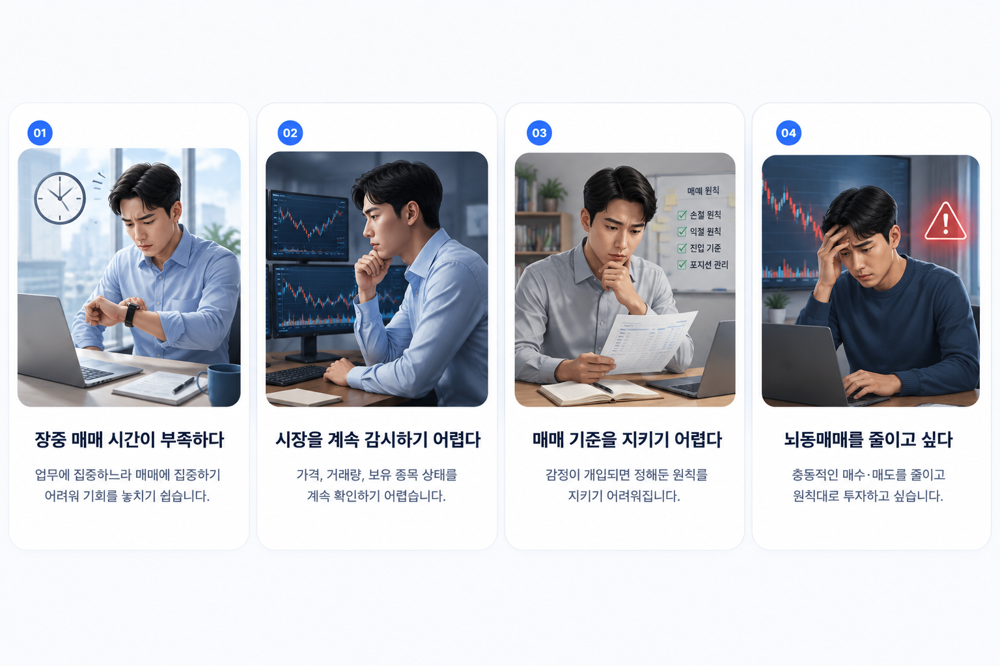
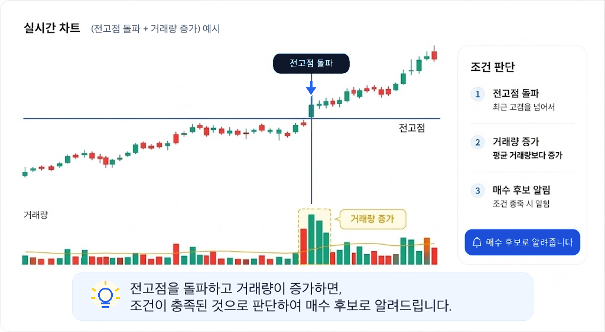

책자로 먼저 구조 이해하기
업비트, 빗썸, 한국투자증권, 키움증권의 REST API와 WebSocket 자동매매 흐름을 책자로 이해합니다.
- 거래소·증권사별 PDF 책자 4권 구성
- 책자 중심 구성, 별도 실습 파일 미제공
- 입금 확인 후 이메일 발송
업비트·빗썸·한국투자증권·키움증권 자동매매 흐름을 PDF 책자로 먼저 이해할 수 있습니다. 혼자 하다 막히면 질문하고, 실전용이 필요하면 퀀트공방이 제작해드립니다.
안내 퀀트공방은 투자 수익을 보장하지 않습니다. 종목 추천, 투자자문, 투자일임, 리딩 서비스를 제공하지 않으며, 고객이 정한 기준을 조건 감시·알림·기록·주문 보조 도구로 구현하는 제작 공방입니다.
Start
먼저 직접 따라 해보고, 필요한 순간에 질문 지원이나 제작 의뢰로 확장할 수 있습니다.
Problem
장중 매매 시간, 시장 감시, 기준 유지, 뇌동매매 문제를 먼저 확인하고 내 자동매매 기준을 정리합니다.

Guide Preview
책자는 복잡한 개발 문서가 아니라, 투자자가 이해하기 쉬운 순서로 자동매매 구조를 설명합니다. 조건을 어떻게 정리하고, 감시와 알림이 어떤 흐름으로 이어지는지 먼저 볼 수 있습니다.
Example
예를 들어 전고점 돌파와 거래량 증가가 함께 발생하면 매수 후보 알림으로 이어지는 식입니다.

Book
처음부터 제작을 맡기기 부담스럽다면, 책자로 먼저 구조를 이해해보세요. 업비트, 빗썸, 한국투자증권, 키움증권 자동매매 흐름을 각각 분리해 정리합니다.
업비트 REST API와 WebSocket을 활용한 시세 조회, 조건 감시, 주문 흐름을 정리한 책자입니다.
빗썸 REST API와 WebSocket 기반으로 코인 시세 감시와 조건 실행 구조를 이해하는 책자입니다.
한국투자증권 API 신청, 인증, 시세 조회, 국내주식 주문 보조 흐름을 다루는 책자입니다.
키움증권 조건검색식, 시세 조회, 국내주식 자동화 흐름을 투자자가 이해하기 쉽게 정리한 책자입니다.
전자책 자료는 디지털 상품 특성상 이메일 발송 전에는 환불이 가능합니다. 이메일 발송 후에는 단순 변심 환불이 제한될 수 있습니다. 단, 파일이 열리지 않거나 누락된 경우에는 재발송 또는 수정본을 제공합니다.
Purchase
구매 신청을 보내주시면 입금 방법과 확인 절차를 이메일 또는 카카오톡으로 안내드립니다. 공개 페이지에는 결제 정보를 노출하지 않습니다.
원하는 책자 상품을 선택하고 구매 신청서를 작성합니다.
신청 내용을 확인한 뒤 이메일 또는 카카오톡으로 입금 방법을 개별 안내드립니다.
안내받은 방법으로 입금한 뒤 입금자명과 신청 정보를 확인합니다.
확인 후 입력하신 이메일로 PDF 또는 다운로드 링크를 보내드립니다.
안내받은 방법으로 입금하시면 입력하신 이메일로 PDF 파일 또는 다운로드 링크를 보내드립니다. 수동 확인 방식이라 즉시 발송이 아닐 수 있습니다. 늦어도 다음날까지 발송하는 것을 원칙으로 합니다.
입금자명과 신청자명이 다르면 확인이 늦어질 수 있습니다. 이메일 주소를 잘못 입력한 경우 카카오톡 또는 이메일로 문의해 주세요.
Order
서버에 개인정보를 저장하지 않습니다. 신청 내용을 이메일 앱으로 열거나 복사해 보내는 방식입니다. 이메일 전송 후 안내받은 입금 방법에 따라 진행해 주세요.
Support
책자 내용, 파이썬 설치, 가상환경 구성, 개발환경 세팅과 오류 화면 확인에 한해 질문권과 원격 설치 지원을 제공합니다. 개별 투자 판단, 종목 추천, 수익성 검토는 포함하지 않습니다.
책자 내용 관련 단문 질문에 답변합니다.
9,900원오류 캡처 확인과 실행 방향 안내를 받을 수 있습니다.
24,000원반복 문의가 예상되는 경우 적합합니다.
39,000원화면 공유로 파이썬 설치, 가상환경 생성, 개발환경 기본 세팅과 실행 확인을 진행합니다.
49,000원라이브러리 설치, 경로·권한 오류, API 실행 환경까지 더 여유 있게 점검합니다.
79,000원질문권과 원격지원은 책자 내용, 파이썬 설치, 가상환경, 개발환경 세팅, 오류 화면 확인에 한정됩니다. 개별 전략 개발, 수익성 검토, 종목 추천, 매수·매도 판단, 투자 상담은 포함하지 않습니다.
Custom Build
퀀트공방은 고객이 정한 매매 기준을 조건표로 정리한 뒤 알림, 기록, 주문 보조 프로그램으로 구현합니다. 처음부터 자동 주문을 권하지 않습니다. 알림과 모의운영으로 먼저 확인한 뒤 필요한 범위만 확장합니다.
카카오톡 또는 이메일로 구현 가능 여부를 간단히 확인합니다.
0원매수, 매도, 손절 기준을 시스템이 읽을 수 있는 조건표로 정리합니다.
49,000원단일 거래소, 단일 조건을 기준으로 텔레그램 알림형 프로그램을 제작합니다.
190,000원부터조건 충족 시 알림을 받고, 사용자가 직접 확인한 뒤 주문하는 구조입니다.
590,000원부터책자 구매 후 30일 이내 제작 의뢰 시 책자 구매금액만큼 제작비에서 차감해드립니다. 단, 최대 차감 한도는 50,000원입니다.
Pricing
먼저 책자로 작게 시작하고, 필요한 경우 질문권·원격지원·제작 의뢰로 확장할 수 있습니다.
| 구분 | 상품 | 가격 | 설명 |
|---|---|---|---|
| 책자 | 업비트 자동매매 PDF | 19,000원부터 | REST API·WebSocket 흐름 설명 |
| 책자 | 빗썸 자동매매 PDF | 19,000원부터 | REST API·WebSocket 흐름 설명 |
| 책자 | 한국투자증권 자동매매 PDF | 29,000원부터 | 국내주식 API 자동화 흐름 설명 |
| 책자 | 키움증권 자동매매 PDF | 29,000원부터 | 조건검색식·시세 감시 흐름 설명 |
| 지원 | 질문 1건 | 9,900원 | 책자 내용 관련 단문 질문 |
| 지원 | 원격 설치 30분 | 49,000원 | 파이썬 설치·가상환경·개발환경 세팅 |
| 제작 | 미니 알림 제작 | 190,000원부터 | 단일 조건 알림형 |
| 제작 | 주문 보조형 | 590,000원부터 | 알림 후 사용자가 확인하고 주문 |
| 제작 | 자동 주문 기본형 | 990,000원부터 | 충분한 테스트 후 제한적으로 검토 |
퀀트공방 소개
은행권 기업금융과 외환, 대표 기관투자자인 공제회의 투자·위험관리, 영국계 글로벌 투자회사 한국지부에서의 벤처기업 투자심사, 금융기술 기업 경영기획과 상장 준비기업의 기업설명·기업가치평가·인수합병 실무를 경험했습니다.
BNK부산은행에서 기업금융·외환 실무를 맡으며 기업의 자금 흐름과 신용 구조를 다뤘습니다. 5대 공제회 중 하나이자 연기금 성격의 기관투자자인 경찰공제회에서는 금융·대체투자 위험관리, 투자심사, 자산배분, 투자전략 업무를 수행했고, 13만 경찰공무원 회원을 대상으로 하는 금융상품 개발에도 참여했습니다.
이후 영국계 글로벌 투자회사 한국지부에서 국내 벤처기업 투자심사, 기업설명 자료 분석, 사업성 검토를 수행했습니다. 또한 일반 사기업에서는 IPO 책임자로서 사업계획, 투자사 대응, 기업가치평가, 인수합병 조율을 담당했습니다.
퀀트공방은 이러한 금융 실무 이해와 Python 자동매매 구현 경험을 바탕으로, 초보자가 직접 따라 할 수 있는 제작 자료와 필요 시 맞춤 제작을 함께 제공합니다.
퀀트공방의 책자, 질문 지원, 제작 서비스는 고객이 정한 기준을 더 일관되게 확인하고 기록하도록 돕는 교육·소프트웨어 제작 서비스입니다.
안내받은 방법으로 입금하시면 입력하신 이메일로 PDF 또는 다운로드 링크를 보내드립니다. 수동 확인 방식이므로 즉시 발송이 아닐 수 있습니다. 늦어도 다음날까지 발송하는 것을 원칙으로 합니다.
상품은 PDF 전자책 자료로만 제공됩니다. 별도의 실습 파일은 제공하지 않습니다.
현재는 구매 신청 후 개별 입금 안내와 이메일 발송 방식으로 운영합니다. 카드결제와 즉시 다운로드는 추후 백엔드 구축 후 검토합니다.
기초 설명부터 제공하지만 파이썬 설치, 가상환경 구성, 개발환경 세팅과 파일 실행 과정은 필요합니다. 완전 초보자는 원격 설치 지원 또는 제작 의뢰를 이용할 수 있습니다.
오류 화면을 캡처해서 문의해 주세요. 책자 관련 기본 질문은 질문권 또는 원격 지원으로 도와드립니다. 단, 개별 전략 개발이나 투자 판단은 포함하지 않습니다.
업비트, 빗썸, 한국투자증권, 키움증권 자동매매 책자를 기준으로 안내합니다. 각 책자는 REST API와 WebSocket 또는 조건검색식 흐름을 플랫폼별로 나누어 설명합니다.
전자책 자료는 이메일 발송 전에는 환불이 가능합니다. 이메일 발송 후에는 디지털 상품 특성상 단순 변심 환불이 제한될 수 있습니다. 파일 오류나 누락이 있으면 재발송 또는 수정본을 제공합니다.
수익을 보장하지 않습니다. 퀀트공방은 고객이 정한 기준을 프로그램으로 구현하거나 직접 제작할 수 있도록 돕는 서비스입니다. 실제 투자 판단과 결과는 이용자 본인의 책임입니다.
책자 구매 후 30일 이내 제작 의뢰 시 책자 구매금액만큼 제작비에서 차감해드립니다. 단, 최대 차감 한도는 50,000원입니다.
책자 구매에는 API 키가 필요하지 않습니다. 제작 또는 원격지원 과정에서도 API 키는 이용자 직접 관리와 출금 권한 없는 키 사용을 원칙으로 합니다.
문의
책자 구매, 입금 확인, 질문권, 제작 의뢰 가능 여부를 이메일 또는 카카오톡으로 문의할 수 있습니다.